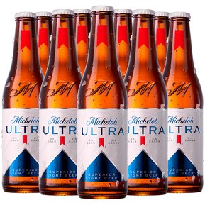
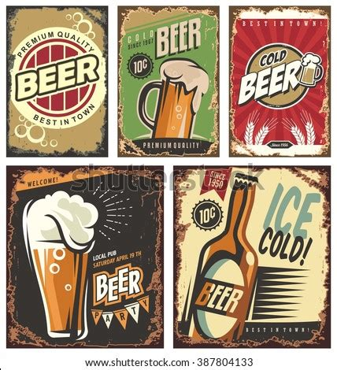
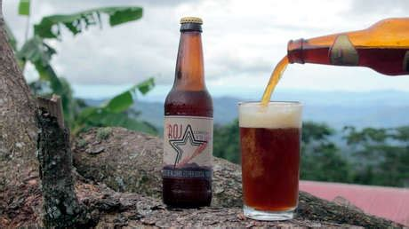
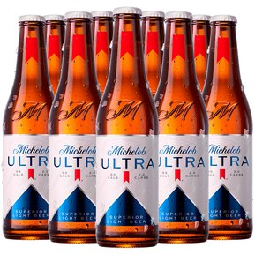
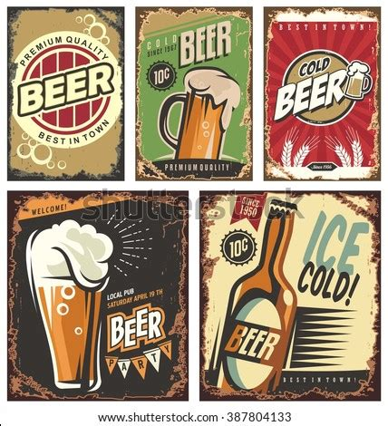
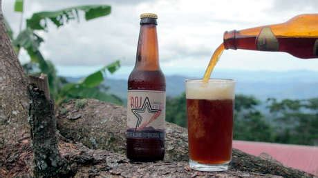

NUESTRA HISTORIA
Todo comenzó en una maestría en Gestión de Pymes en la Universidad de La Punta. Arrancó quien es hoy el único dueño de la cervecería, junto con su ex socio, con una fábrica de pequeña escala, que al poco tiempo se convertiría en lo que hoy es Pepito. Enfocados en la mejora continua, en Pepito trabajamos para lograr ser reconocidos dentro del mercado de la cerveza artesanal entre los consumidores. Desde nuestro inicio, nos encontramos llevando a cabo un plan sostenido de inversión, para poder dar respuesta a la creciente demanda de nuestro producto entre nuestros clientes.
Tipos y estilos de cerveza por fermentación espontánea
Las cervezas de tipo salvaje o de fermentación espontánea cervezas que utilizan levaduras silvestres del ambiente durante la fermentación en lugar de levaduras cultivadas con cepas específicas. Ya en la Edad Media, los cerveceros habían aprendido a cosechar la levadura de una cerveza y usarla en la siguiente elaboración, pero algunas pocas regiones aisladas todavía siguieron usando levaduras silvestres. La región más conocida donde todavía se utiliza la fermentación espontánea es el Senne Valley en Bélgica, donde se producen las cervezas tipo Lambic.
¿Qué es un estilo de cerveza?
Los antiguos tipos de cerveza generalmente eran conocidos por la ciudad donde se comenzaron a elaborar, Pilsner, Vienna, Dortmund, Berlín o por el tipo de agua característico de la zona, Burton, Londres, Melbourne o Munich.
Hoy en día, con la convergente aceptación del término «estilo de cerveza», la afirmación «tipo de cerveza» por lo general ha quedado restringida a hacer referencia a una gran división de familias de cervezas elaborada con malta, según el tipo de fermentación utilizada: cervezas Ale o cervezas Lager, dentro de las que también se considera a la familia de cervezas elaboradas por fermentación espontanea o cervezas salvajes, principalmente los estilos Lambic producidos en Bélgica.
Receta de pollo a la cerveza con champiñones, un guiso delicioso
El pollo es una de las carnes más versátiles y por eso me encanta utilizarlo en la cocina ya que es el protagonista de infinidad de recetas tradicionales pero también es un fantástica ingrediente para otras más innovadoras. Siempre está rico cocinado con cualquier técnica de cocina que respete sus tiempos para que se mantenga jugoso, tanto si es al horno, salteado, a la plancha, cocido o guisado como en esta receta. Esta receta de pollo a la cerveza con champiñones es un guiso delicioso y en cuanto lo pruebes y también veas lo fácil que es de preparar seguro que se queda en tu recetario habitual. El pollo queda jugoso, muy tierno y también sabroso, verás cómo se deshace en la boca.
- 1 pollo (yo suelo utilizar pollo campero) entero cortado en trozos o bien 4 muslos con contramuslo, lo que prefieras.
- 1 cebolla.
- 8 champiñones.
- 33 cl de cerveza.
- Caldo de pollo casero para cubrir el pollo o, si no tienes, agua. Normalmente se necesita menos de un litro. Puedes preparar caldo de pollo casero con nuestra receta.
- 1 cucharada sopera de harina fina de maíz o maicena.
- Aceite de oliva, sal y pimienta negra recién molida.
...